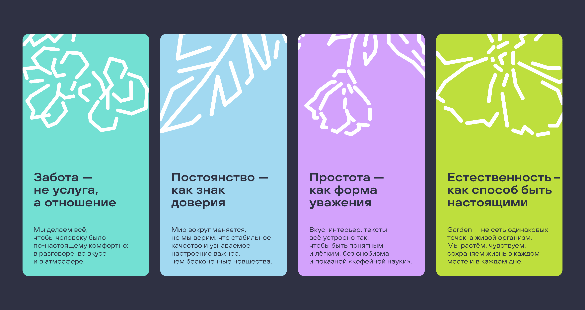

Звук выключен
Телефон не отвлекает от группы, ведущего и собственного внимания.
Комфорт в разговоре, вкусе, атмосфере и деталях.
Гость возвращается, когда вкус и настроение не подводят.
Говорим и действуем понятно, без лишних усложнений.
Garden живой, человеческий и спокойный, а не показной.
